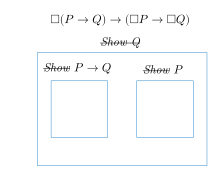
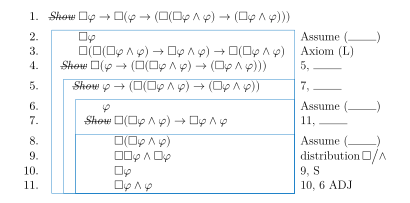
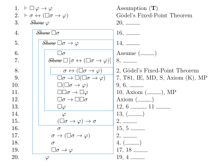
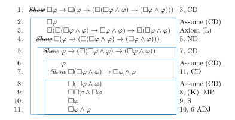

4 Gödel’s Second Incompleteness theorem
- The responsive layout on mobile portrait might not be as polished; if content is overlapped thus unintelligible, please rotate device to landscape. You might also wish to access the pdf version of this book.
Gödel informally explained his First Incompleteness Theorem noting that the analogy to the antinomy of the Liar “leaps to the eye (GCW-I, 149)”. Whereas the Liar sentence asserts of itself that it is untrue, the Gödel sentence says of itself that it is unprovable in a precisely specified formal system such as Principia Mathematica.
\(G:G\;\text{is not provable in system}\,\mathrm{PM}.\)
Gödel further remarks that any epistemological antinomy can be used to motivate his proof but chooses the Richard Paradox, which we discussed in Chapter 1. Gödel’s choice was prescient: the Berry Paradox is a simplification of the Richard Paradox, and can be used to elegantly prove the First Incompleteness Theorem showing its connection with Chaitin’s interpretation Gödel Incompletehes in terms of algorithmic randomness.
Gödel’s First Incompleteness Theorem: if a formal system is consistent and its axiom system has enough arithmetic so that its theorems can be listed by some mechanical procedure, then there exists an undecidable sentence in that formal system, which is therefore incomplete.1
1 The formal system is also essentially incomplete, i.e., one can add the undecidable Gödel sentence as a new axiom and the resulting system will have a new undecidable sentence, which is also undecidable in the original system.
4.1 Provability Modal Logics

Elegant proofs of Gödel’s Second Incompleteness Theorem were discovered in modal provability logics, which emerged from the 1950s-1970s. These logics were anticipated by (Gödel 1933a) “An interpretation of intuitionistic propositional calculus.” Gödel’s insight was that intuitionistic truth was characterized in terms of proof, which is a kind of necessity, and so modal axioms could be used to formalize the properties of provability:
| (T) | \(\square\,P\to P\) | What is provable is ________________. |
| (K) | \(\square\,(P\to Q)\to(\square\,P\to\square\,Q)\) | Whatever follows from what is provable is ________________. |
| (4) | \(\square\,P\to\square\square\,P\) | What is provable is provably ________. |
(Henkin 1952) posed the intriguing question whether the positive Gödelian sentence “I am provable” is provable. (Löb 1955) answered Henkin’s question in the affirmative by showing that Peano Arithmetic proves a counterpart to Löb’s Axiom:
| (L) | \(\square\,(\square\,P\to P)\to\square\,P\) | Löb’s Axiom restricts (T) to what is provable. |
- A Gödel-Löb modal probability logic (GL) results from adding (L) to (K) and
- the rule of necessitation or universal derivation [UD] (i.e., if \(\mathbf{GL}\vdash P\) then \(\mathbf{GL}\vdash\square\,P\)),
- modus ponens [MP]
- a rule for proving all tautologies or the KM2 system of natural deduction.
Note: adding axiom (4) turns out to be redundant. In 1975 Howard de Jongh proved that Axiom (4) is derivable from Löb’s axiom and (K) using the substitution of ‘(\(\square\,P\land P\))’ for ‘\(P\)’.
- A provability system consists minimal modal logic K with the additional axiom \[(\mathbf{w})\quad\square\,(\square\,\varphi\to\varphi)\to\square\,\varphi.\]
Theorem 4.1 (Howard de Jongh, 1970s) 2 Axiom (4) holds in the Gödel-Lob Provability Logic.
2 At the Tenth International Tbilisi Symposium on Language, Logic and Computation in 2013, one of the speakers referred to this theorem as part of the folklore of the field not realizing that de Jongh was in the audience.
Proof. Replacing \(\varphi\) by \(\color{red}(\square\,\varphi\land\varphi)\) in Axiom (W) we obtain \[\square(\square\,\textcolor{red}{(\square \varphi \land \varphi)} \rightarrow\textcolor{red}{(\square \varphi \land \varphi)}) \rightarrow \square\,\textcolor{red}{(\square \varphi \land \varphi)}.\] \(\Box\)
It happens that the lemma \[\square \varphi \rightarrow \square(\square(\square \varphi \wedge \varphi)) \rightarrow \square(\square \varphi \wedge \varphi)\] is derivable in minimal modal logic K (see exercises below).
It therefore follows that \[\square \varphi \rightarrow \color{magenta}\square(\square \varphi \wedge \varphi)\] and hence by (T), \[\square \varphi \rightarrow \square \square \varphi .\]
4.2 Exercises

Next comes the Löb-Gödel Theorem, which we shall call the “Magical Modal Mystery Tour”3:
3 van Benthan [2010], p. 245 describes this theorem “as a piece of ‘magical’ modal reasoning that has delighted generations.”

Now we may obtain a modal version of Gödel’s First Incompleteness Theorem. Gödel’s famous arithmetical version of the Liar G intuitively says, “I am not provable”: \[G\leftrightarrow{}{\sim}\square G.\] Note the consistency of Peano Arithmetic may be formulated as: \({\sim}\square\,(1=2)\) (von Neumann) or \({\sim}\square\,(0\neq 0)\).
We can sketch an elegant proof in modal provability logic of Gödel’s Second Incompleteness Theorem. First, we have a modal counterpoint to the fixed-point theorem that yields the Gödel sentence: \[\vDash G\leftrightarrow{}{\sim}\square G.\]
In his letter, von Neumann noted that the consistency of Peano Arithmetic (PA) can be expressed by the formula that \((1 = 2)\) is not provable: \[\textcolor{blue}{{\normalfont\textsc{Cons}}(\mathrm{PA})}:={}\textcolor{red}{{\sim}\square\,(1=2)}.\]
Now the gist of the First Incompleteness Theorem is the demonstration that: \[\text{if}\,\vdash G\leftrightarrow{}{\sim}\square G,\,\text{then}\,\vdash{}{\sim}\square\,(1=2)\to{}{\sim}\square G.\]
By the fixed-point theorem, \({\sim}\square\,G\) is logically equivalent to \(G\), so we have \(\vdash{}{\sim}\square\,1 = 2 \to G\):
By the rule of necessitation, we may prefix a and then distribute, using (K), the over the conditional: \[\vdash{}\textcolor{blue}{\square}{\sim}\square\,(1=2)\color{blue}\to\square\color{black}G.\] According to the First Incompleteness Theorem, the provability of the Gödel sentence implies the inconsistency of the system, so:
In short, we have \[\vdash{}\textcolor{red}{\square}{\sim}\square\,(1=2)\to\textcolor{red}{\square}\,(1=2),\] which, by contraposition, yields \[\vdash\textcolor{red}{{\sim}\square\,(1=2)}\to{\sim}\square\textcolor{red}{{\sim}\square\,(1=2)}.\]
Since \(\textcolor{red}{{\sim}\square{}(1=2)}\), by definition, is \(\textcolor{blue}{{\normalfont\textsc{Cons}}(\mathrm{PA})}\), we have
Gödel’s Second Incompleteness Theorem. \((\textcolor{blue}{{\normalfont\textsc{Cons}}(\mathrm{PA})}\to{\sim}\square\textcolor{blue}{{\normalfont\textsc{Cons}}(\mathrm{PA})})\), i.e., if Peano Arithmetic is consistent, then it cannot prove its own consistency.
In a lecture to a joint meeting of the Mathematical Association of America and the American Mathematical Society, Gödel summarized the significance of his result for Hilbert’s program: the hope of finding “…a proof for freedom from contradiction undertaken by Hilbert and his disciples” had “vanished entirely in view of some recently discovered facts. It can be shown quite generally that there can exist no proof of the freedom of contradiction of a formal system S which could be expressed in terms of the formal system S itself ….” (Gödel 1933b, GCW-III, p. 52).
4.3 Solution to Problems
